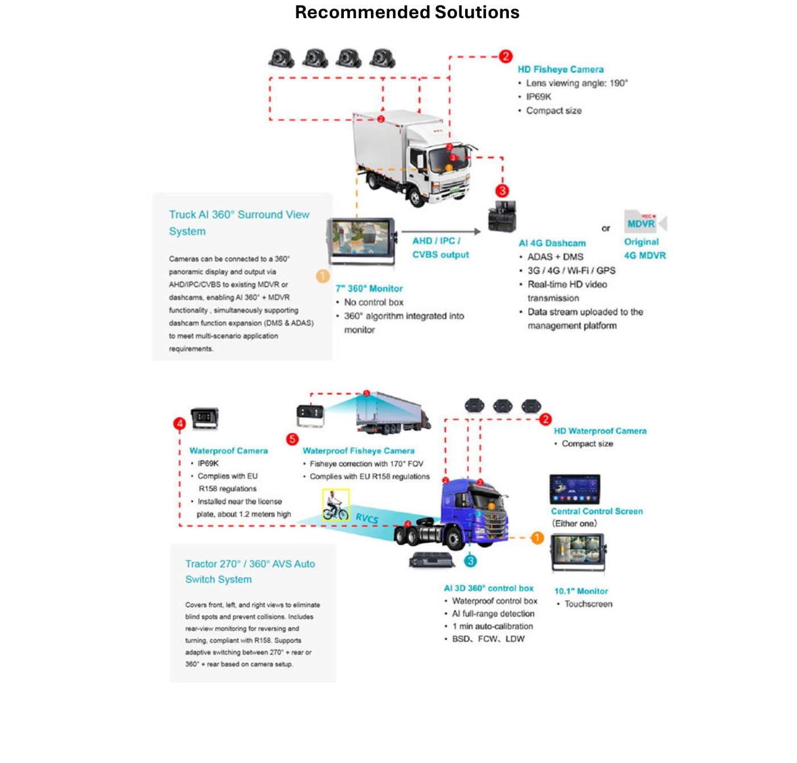
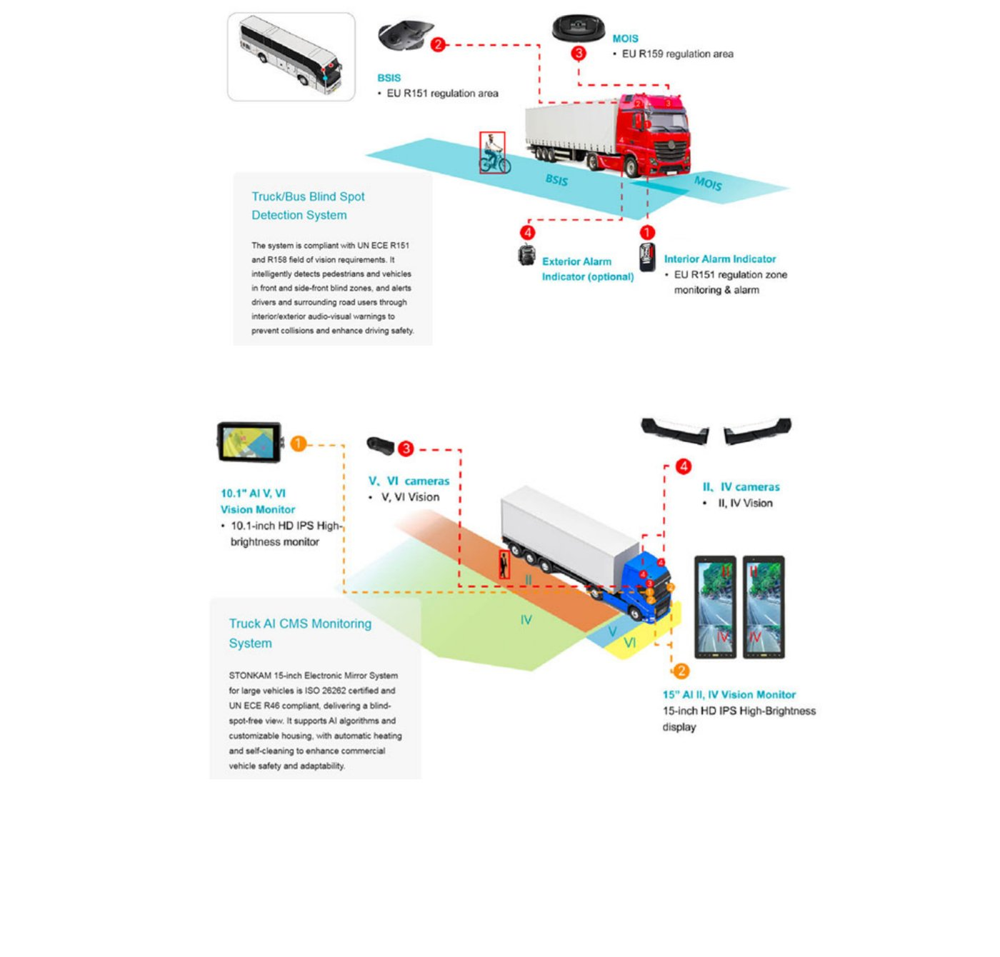
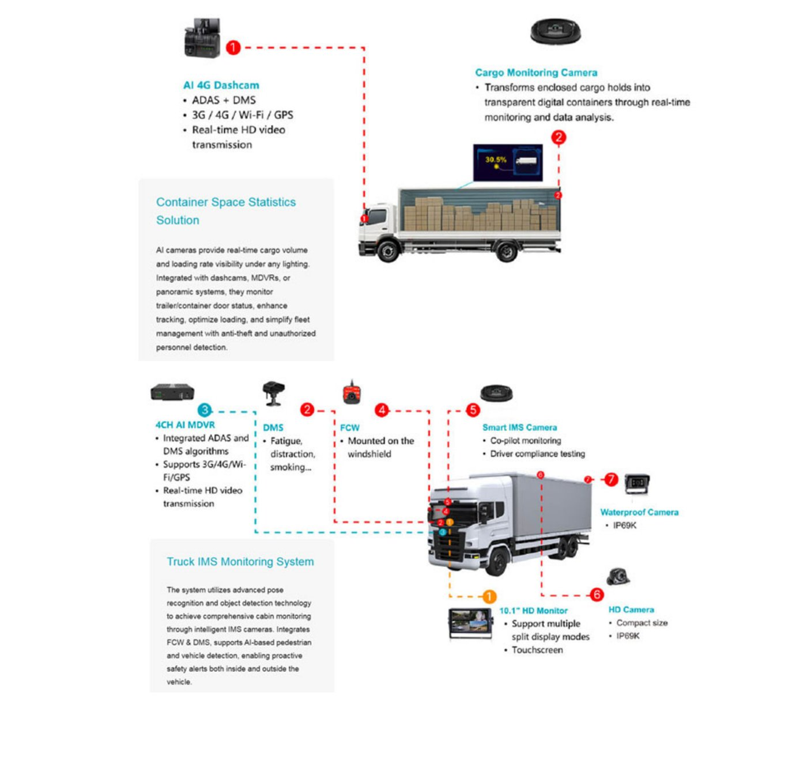
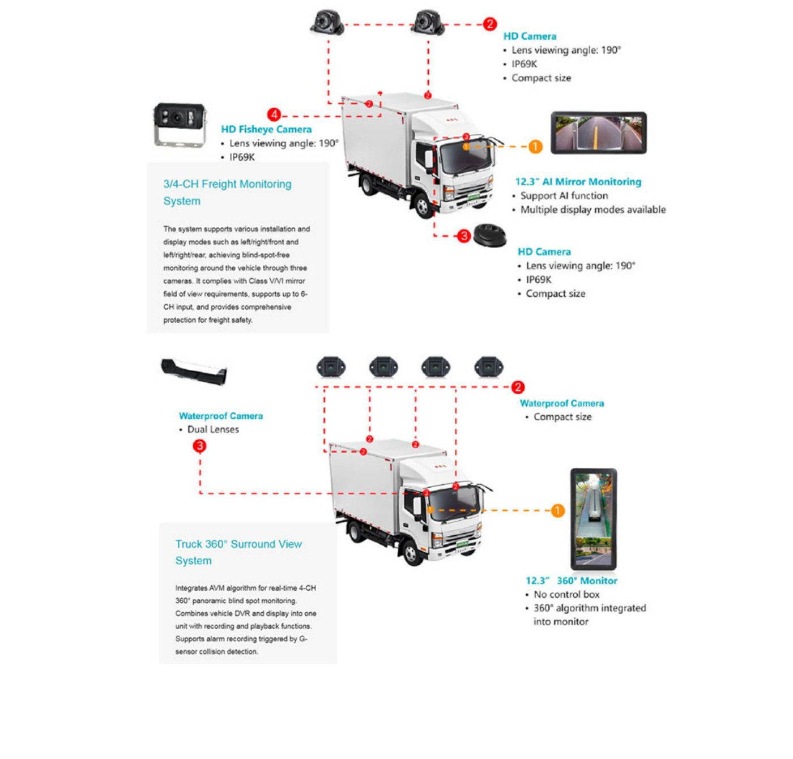

Soluciones para camiones
Seguridad y gestión inteligente para vehículos comerciales
Problemas
Las operaciones de vehículos comerciales enfrentan desafíos duales en seguridad y gestión. El gran tamaño y los puntos ciegos de los vehículos incrementan el riesgo de colisión durante maniobras de reversa, cambios de carril y conducción nocturna; los viajes de larga distancia elevan riesgos como la fatiga y distracción del conductor, mientras la carga permanece vulnerable al robo o daño.
En el plano de gestión, la dependencia de procesos manuales reduce la eficiencia de programación, las altas tasas de viajes en vacío y el mantenimiento demorado elevan los costos operativos, y la ausencia de monitoreo digital dificulta la toma de decisiones basada en datos — todo esto agravado por regulaciones de cumplimiento que varían según la región.
Enfoque de la solución
Las soluciones para vehículos comerciales de FleetKAM abordan estos desafíos clave: el sistema IMS en cabina detecta y alerta comportamientos anómalos del conductor o pasajeros en tiempo real, mientras que BSD, AI 360° surround view y AI CMS eliminan los riesgos de puntos ciegos.
La solución también integra gestión remota del vehículo por AI 4G, analítica de espacio de carga y funciones APC para potenciar la eficiencia de la flota. La mayoría de los productos FleetKAM cumplen con estándares de la UE y normativas globales de cumplimiento, asegurando operaciones comerciales seguras y eficientes a nivel mundial.

Sistemas recomendados
Sistemas y componentes para camiones
Sistema 01
Truck AI 360° Surround View System
Las cámaras pueden conectarse a una pantalla panorámica de 360° y su salida enviarse vía AHD/IPC/CVBS a MDVR o dashcams existentes, habilitando la funcionalidad AI 360° + MDVR, y soportando simultáneamente la expansión de funciones del dashcam (DMS y ADAS) para cumplir con requisitos de aplicación multi-escenario.
Sistema 02
Tractor 270° / 360° AVS Auto Switch System
Cubre vistas frontal, izquierda y derecha para eliminar puntos ciegos y prevenir colisiones. Incluye monitoreo de vista trasera para maniobras de reversa y giro, cumpliendo con R158. Soporta el cambio adaptativo entre 270° + trasera o 360° + trasera según la configuración de cámaras.

Sistema 03
Truck/Bus Blind Spot Detection System
El sistema cumple con los requisitos de campo de visión de UN ECE R151 y R158. Detecta inteligentemente peatones y vehículos en las zonas ciegas frontal y frontal-lateral, y alerta a conductores y usuarios de la vía circundantes mediante advertencias audiovisuales interiores/exteriores para prevenir colisiones y mejorar la seguridad de manejo.
Sistema 04
Truck AI CMS Monitoring System
El sistema de espejo electrónico STONKAM de 15 pulgadas para vehículos grandes está certificado ISO 26262 y cumple con UN ECE R46, entregando una vista libre de puntos ciegos. Soporta algoritmos de IA y carcasa personalizable, con calefacción automática y autolimpieza para mejorar la seguridad y adaptabilidad del vehículo comercial.

Sistema 05
Container Space Statistics Solution
Las cámaras con IA proveen visibilidad en tiempo real del volumen de carga y la tasa de ocupación bajo cualquier condición de iluminación. Integradas con dashcams, MDVR o sistemas panorámicos, monitorean el estado de puertas de tráiler/contenedor, mejoran el seguimiento, optimizan la carga y simplifican la gestión de flota con detección antirrobo y de personal no autorizado.
Sistema 06
Truck IMS Monitoring System
El sistema utiliza tecnología avanzada de reconocimiento de postura y detección de objetos para lograr un monitoreo integral de la cabina mediante cámaras IMS inteligentes. Integra FCW y DMS, soporta detección de peatones y vehículos basada en IA, habilitando alertas de seguridad proactivas tanto dentro como fuera del vehículo.

Sistema 07
3/4-CH Freight Monitoring System
El sistema soporta diversos modos de instalación y visualización, como izquierda/derecha/frontal e izquierda/derecha/trasera, logrando un monitoreo libre de puntos ciegos alrededor del vehículo mediante tres cámaras. Cumple con los requisitos de campo de visión de espejo Clase V/VI, soporta hasta 6 canales de entrada y brinda protección integral para la seguridad de la carga.
Sistema 08
Truck 360° Surround View System
Integra el algoritmo AVM para el monitoreo panorámico de puntos ciegos en 4 canales en tiempo real. Combina el DVR del vehículo y la pantalla en una sola unidad con funciones de grabación y reproducción. Soporta grabación de alarma activada por detección de colisión mediante sensor G.
